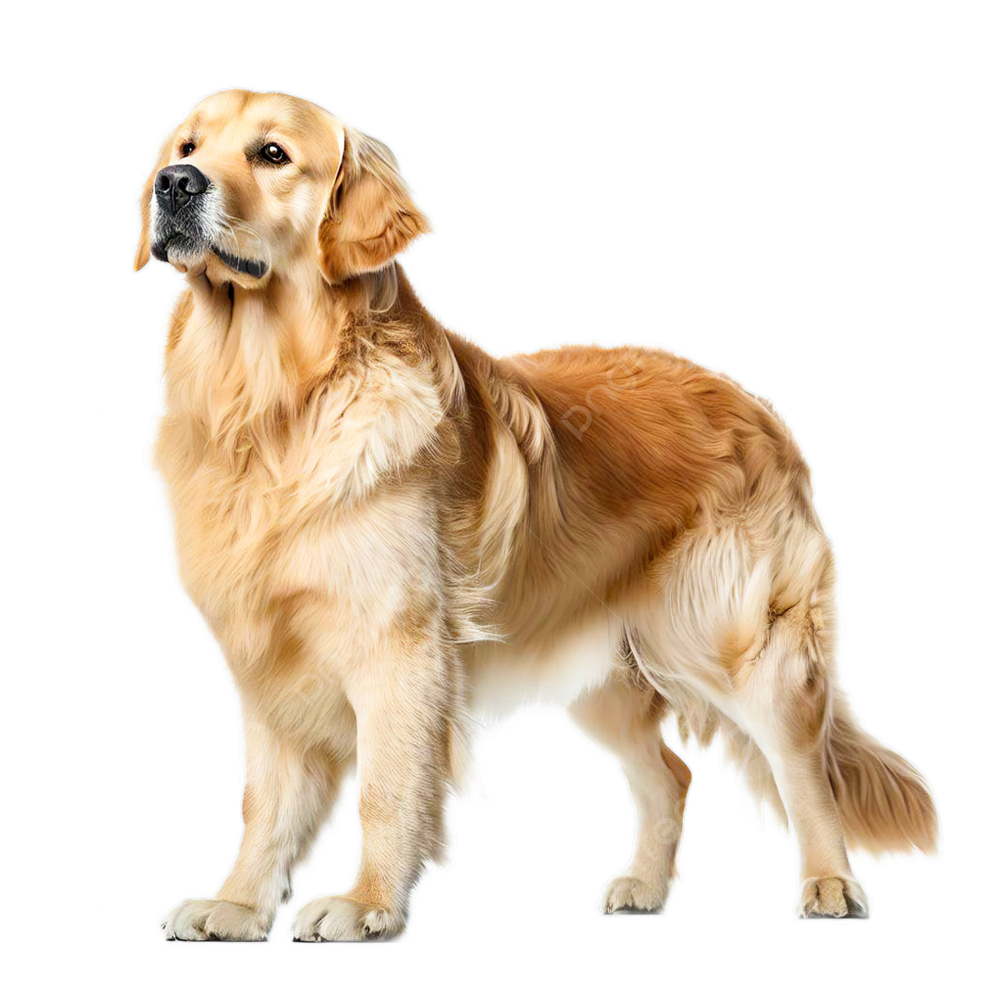

Собаки
Мой щенок похож немного
На бульдога и на дога,
На собаку-водолаза
И на всех овчарок сразу.
(П. Синявский)


§1. Общее описание
Собака - домашнее животное, одно из наиболее популярных (наряду с кошкой) "животных-компаньонов". Собаки известны своими способностями к обучению, любовью к игре, социальным поведением.
Выведены специальные породы собак, предназначенные для различных целей: охоты, собачьих боёв, тяги гужевого транспорта и др., а также просто декоративные породы (например, болонка, пудель). Собаки часто используются в научных целях, с их участием проводят биологические и биотехнические исследования и эксперименты.
§2. Физические данные
Масса собаки зависит от её телосложения и количества жировых запасов. Максимальный зарегистрированный рост у собаки - 109 см в холке при весе 111 кг и длине 220 см. Известен случай, когда собака весила 123 кг, а позже её вес уменьшился до 72 кг.
При регулярной тренировке собаки удивительно сильны для своих размеров - некоторые способны переносить на спине тяжёлую поклажу, таскать за собой сани и другие большие грузы. Ездовым собакам часто приходится вшестером буксировать нарты массой в одну тонну по несколько часов подряд, фоксхаунды могут идти по следу 48 ч без передышки.
§3. Форма и постановка хвоста
В результате селекционной работы у собак наблюдается огромное разнообразие форм и постановок хвоста. Например, у некоторых бульдоговидных пород он короткий и скрученный.
§4. Органы чувств
У собак развито цветное зрение, хотя и в меньшей степени, чем у человека. У собак весь спектр сдвинут в сторону ультрафиолета.
Поэтому они, как дальтоники, красный и оранжевый цвет не воспринимают адекватно. Зато собаки различают до 40 оттенков серого. Википедия, 2011


На главную